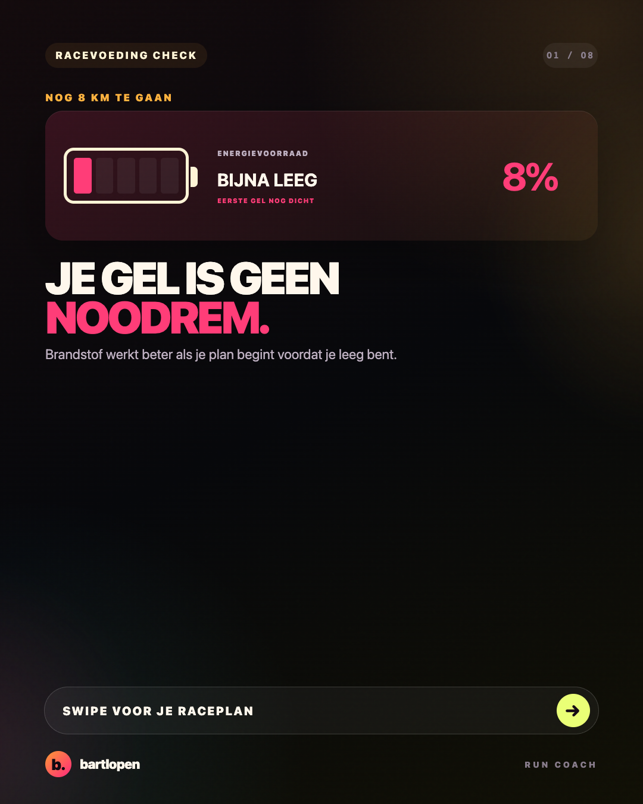
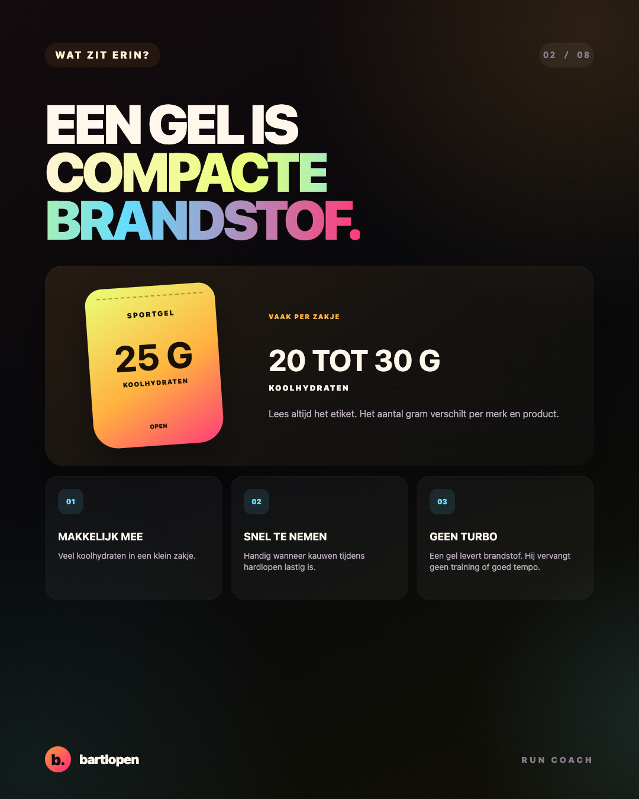
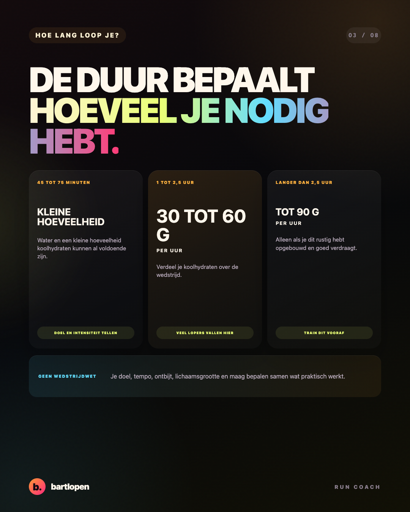
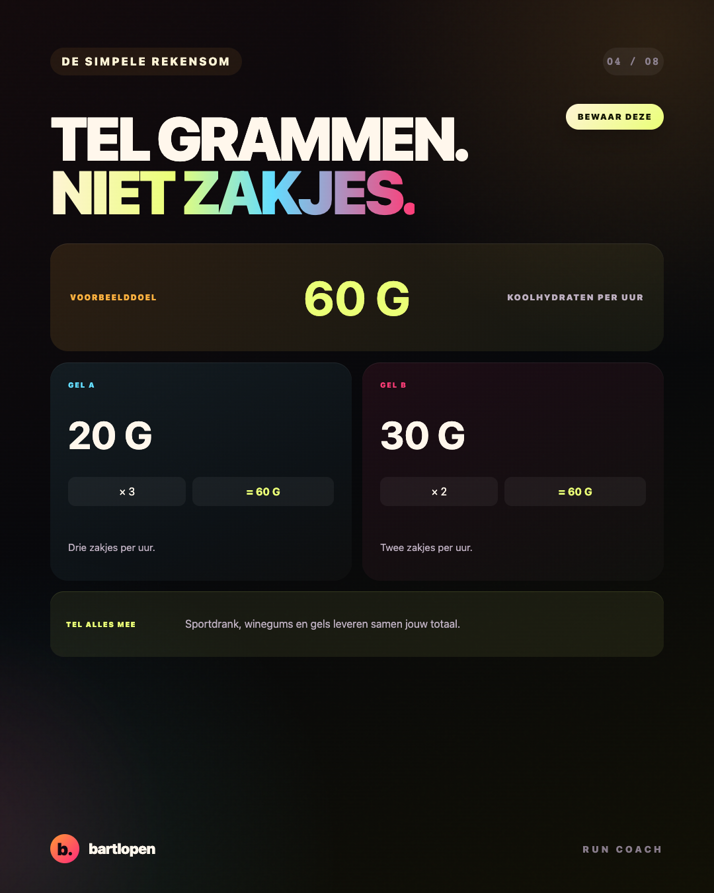
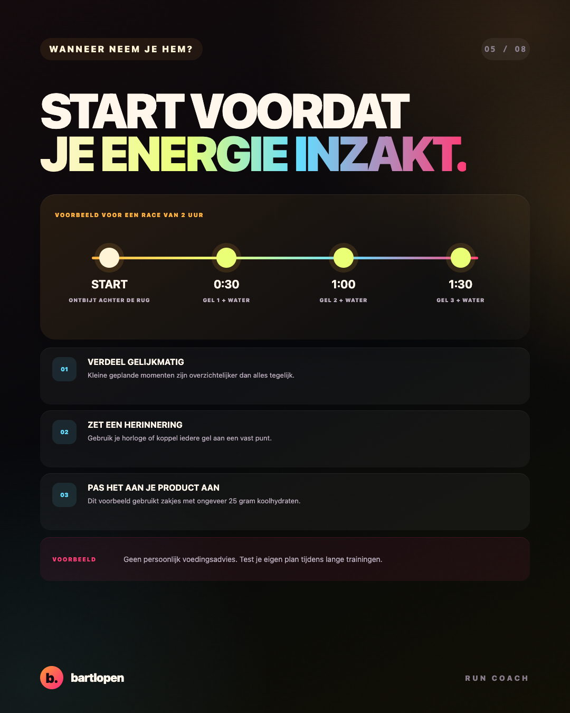
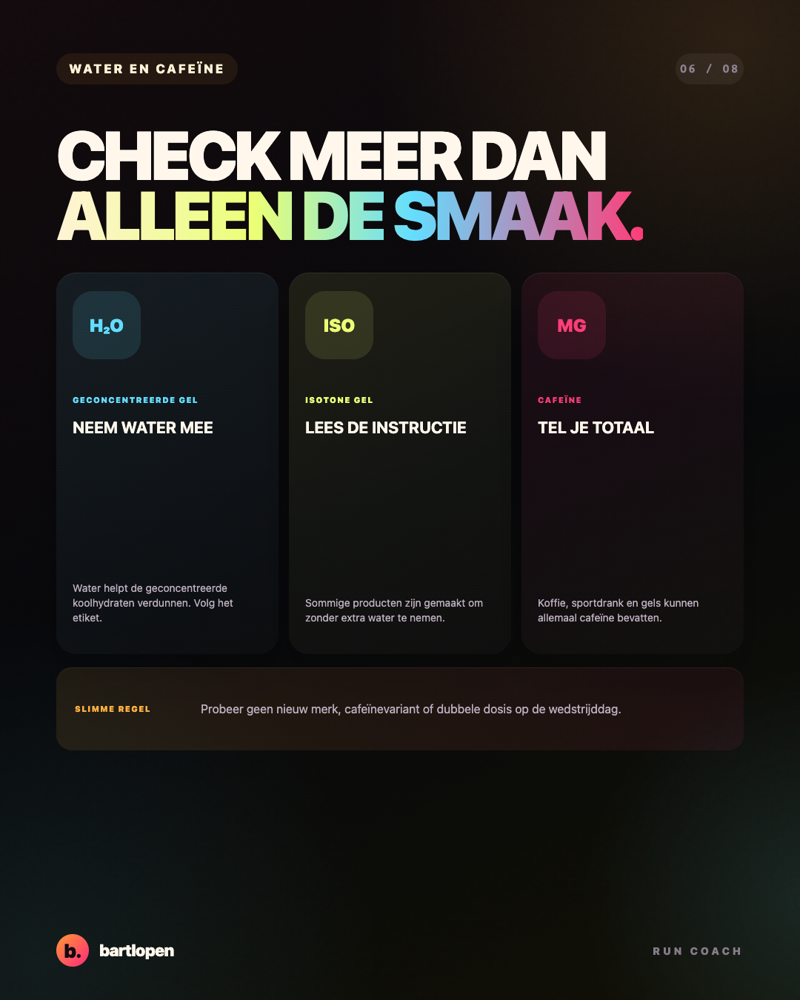
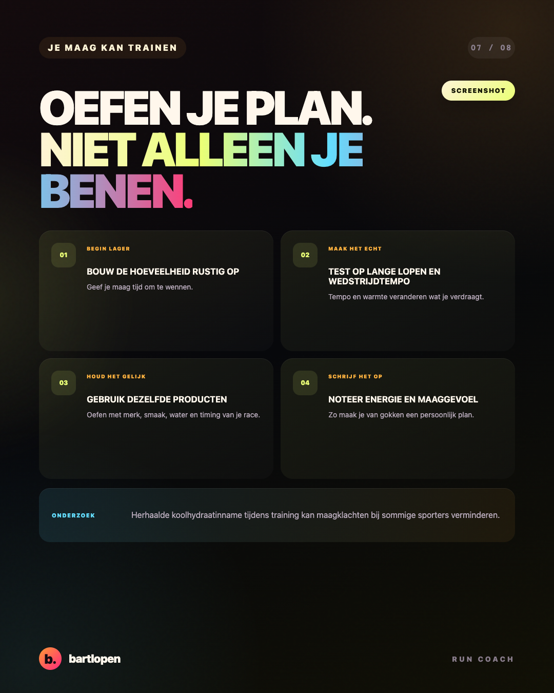
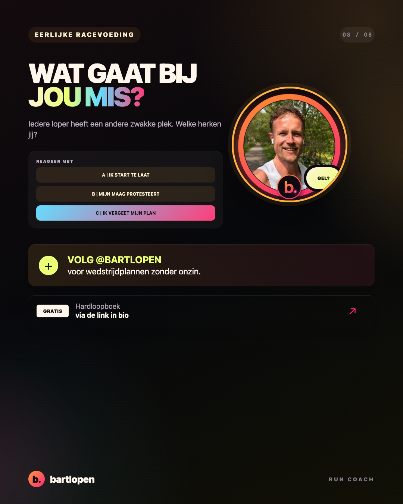

SLIDE 01 ↗Sportgels voor
hardlopers
Acht praktische slides over hoeveel koolhydraten je nodig hebt, het lezen van etiketten, timing, water en het trainen van je maag.

SLIDE 02 ↗
SLIDE 03 ↗
SLIDE 04 ↗
SLIDE 05 ↗
SLIDE 06 ↗
SLIDE 07 ↗
SLIDE 08 ↗Caption
JE GEL IS GEEN NOODREM. 🚨 Wie pas aan brandstof denkt als de benen al leeglopen, begint meestal te laat. Een sportgel is vooral compacte koolhydraten. Handig, snel en makkelijk mee te nemen. Maar het zakje bepaalt niet je plan. Het aantal gram op het etiket wel. Voor inspanningen van 1 tot 2,5 uur is 30 tot 60 gram koolhydraten per uur een veelgebruikt uitgangspunt. Loop je langer, dan kan de behoefte hoger worden. Bouw dat altijd op tijdens trainingen. Mijn simpele regels: 🧮 tel grammen, niet alleen zakjes ⏰ verdeel je inname over de wedstrijd 💧 neem bij geconcentreerde gels water volgens het etiket ☕ tel alle cafeïne uit koffie, drank en gels mee 🧪 test merk, smaak, timing en hoeveelheid vooraf Een zakje met 20 gram vraagt een ander plan dan een zakje met 30 gram. Sportdrank en snoep tellen ook mee in je totaal. UITDAGING: oefen je volledige voedingsplan tijdens je volgende lange duurloop. Noteer daarna je energie en maaggevoel. Wat gaat bij jou het vaakst mis: A je begint te laat, B je maag protesteert of C je vergeet je plan? 👇 #sportgel #hardlopen #racevoeding #sportvoeding #marathontraining #runningtips #bartlopen
Bronnen: de voedingsrichtlijn van World Athletics, de sportgelinformatie van het Australian Institute of Sport, een overzichtsonderzoek naar koolhydraten en duurprestatie en een systematische review naar het trainen van de maag.